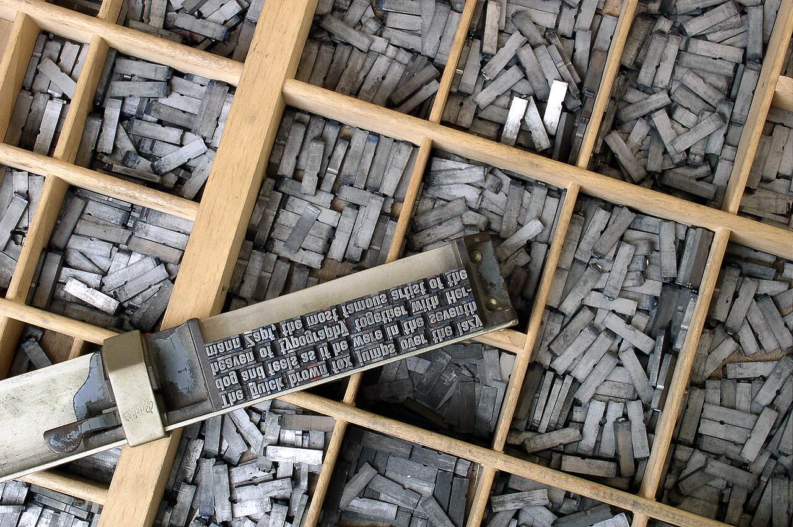
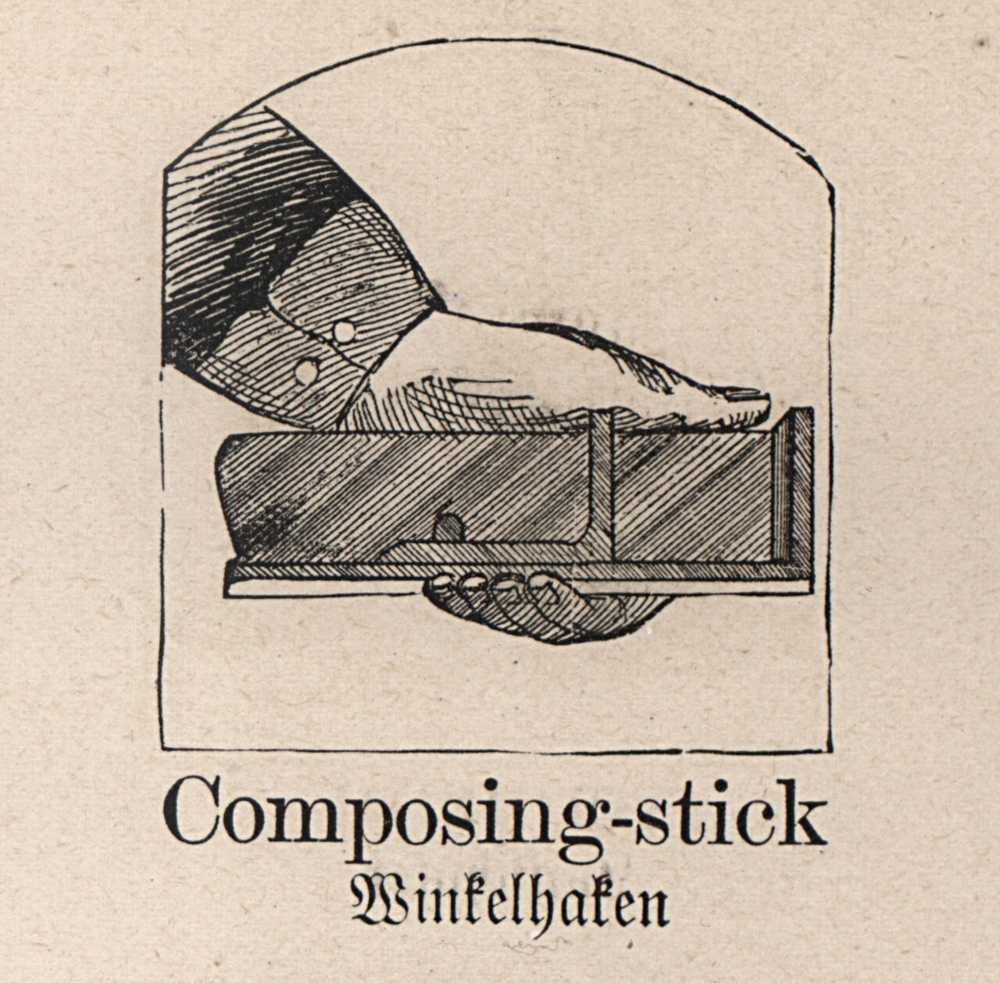
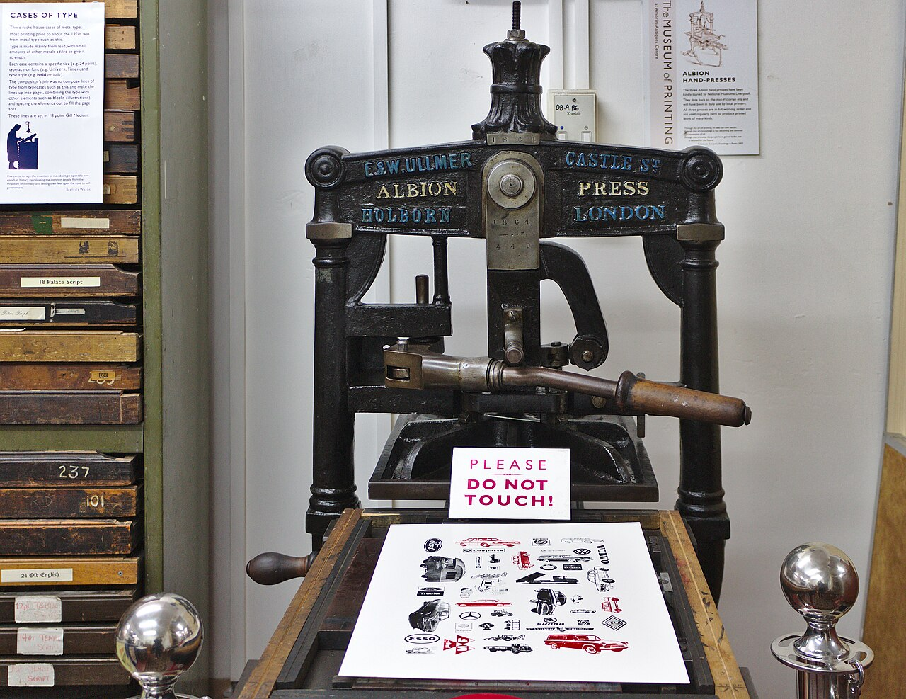
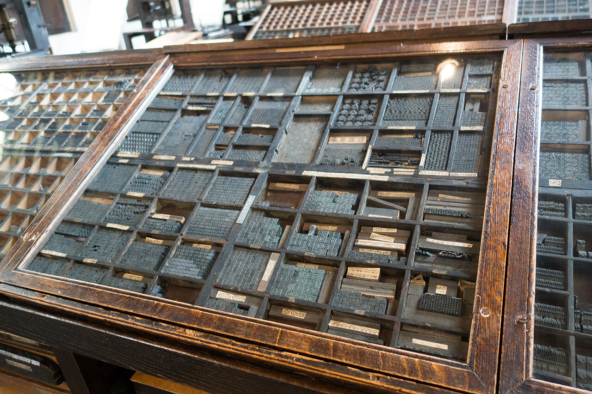
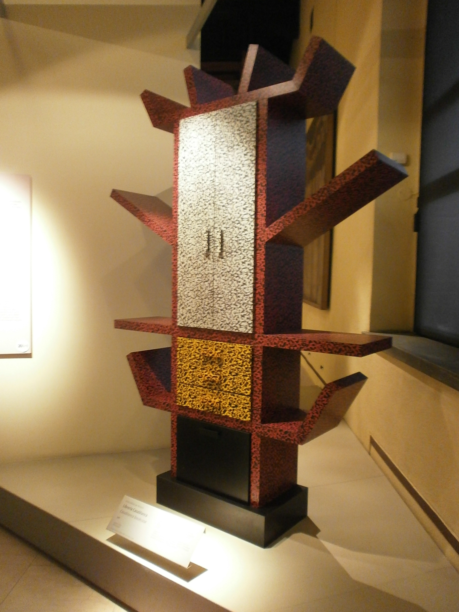
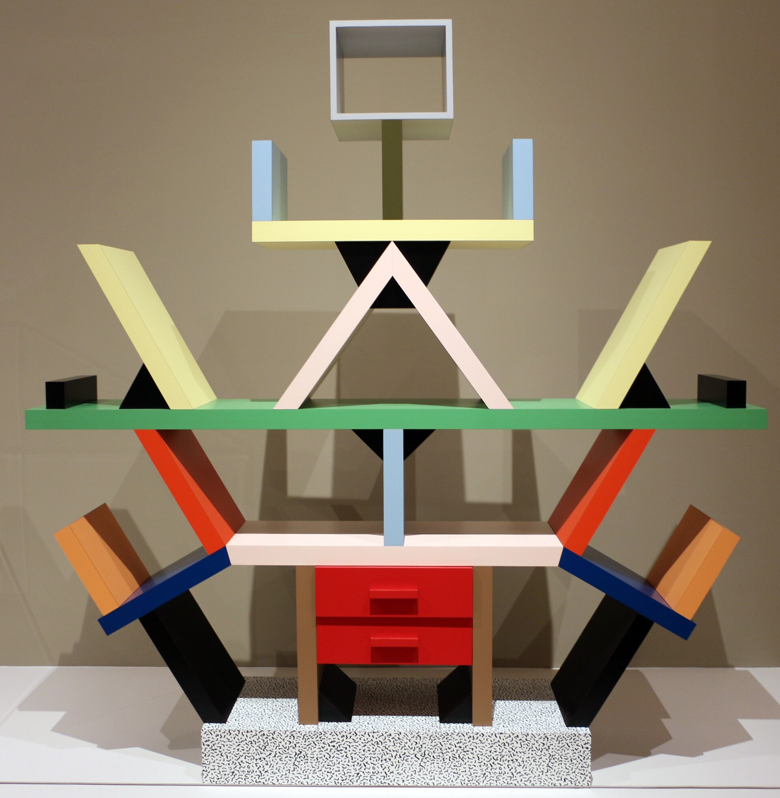

两班读数并置
把一吨纸拆成五道工序，两班的差别只剩一处：换模。其余四道工序的偏差都在 ±4 度以内，属于电表本身的读数噪声，不构成判断依据。
| 工序 | A 班 | B 班 | 差值 | 判定 |
|---|---|---|---|---|
| 换模 | 86 | 60 | 26 | 超公差 |
| 试印与校色 | 64 | 61 | 3 | 读数目噪声 |
| 正常走纸 | 214 | 218 | 4 | 读数目噪声 |
| 清洗 | 30 | 29 | 1 | 读数目噪声 |
| 待机 | 18 | 18 | 0 | 两班同值 |
| 合计 | 412 | 386 | 26 | 差在换模 |
表的最后一行就是主张句的那两个数：412 与 386。五行相加与电表的总账对齐，误差 0 度，所以这张表可以直接拿去对账，不需要再乘系数。

PL-04 铅活字：一色一版，一版一模，套印错位在凸版里是常态而不是故障。本页把这句话做成了版面规则：1.5px 与 1.2px 两个数值写死，方向一律向右下。Willi Heidelbach · CC BY 2.5 · Wikimedia Commons · 原为 S16 抓取
差值 26 度的去向
换模 9 分钟里，机器没有走纸，但加热与真空泵一直在吃电。这 9 分钟即 26 度。
换模那 9 分钟
拆与装
5:50 拆版加装版
旧印版拆下 2:10，新印版落位 2:40，螺栓按对角两遍过。
校套准
1:50 分钟
校的是三个撞口：蓝压红 1.5px、红压黑 1.2px、蓝压黑 0.8px。
试印与记录
2:20 分钟
试印 4 张，量三处撞口，记一次工时；这 4 张纸不计入成品。
合计 9:00
耗电 26 度
功率 2.89 kW
速率档 1.00 / 0.88 / 0.94

PL-06 排字手托：先把字排成行，再整行落版。换模这 9 分钟里，人手做的事和这只手托做的事一样——把一段一段的行攒成一块能上机的版。takomabibelot · CC BY 2.0 · Wikimedia Commons · 原为 S16 抓取.jpg){kind=link}
把 9 分钟拆到动作上，能压的只有两段：装版 2:40 与校套准 1:50。
- 拆旧版
2:10松六个压板螺栓，版心朝下取出，编号上账。 - 装新版
2:40版框落位前先擦净台面，落位后按对角两遍压紧。 - 校套准
1:50三处撞口各量一次，超±0.5px就重压。 - 试印
1:20走4张，看网点与撞口，不看图案。 - 记账
1:00记工时、记度数，写进分钟表。
B 班把这五步的顺序调了一处：试印放在校套准之前，用 4 张纸换掉一次重复落版，装版那段压到 2:40 以内，于是 9 分钟只剩 26 度的差。
印版件与车间

PL-05 Albion 手摇印刷机：一次一版、一版一色，压杆下去的那一下就是套印。本页的两组读数也按这个顺序排：蓝版先落，红版后落，黑版压最上。Rodhullandemu · CC BY-SA 4.0 · Wikimedia Commons · 原为 S16 抓取
车间里的机器决定版面：11° 斜栏线不是装饰，它是印版在版台上落位的角度。
- 版台角度
11°，每100px抬升19.4px - 网点
100线，网屏角30° - 单张印版件长边
1600px，不超90KB - 圆角 全站
0，层次靠错位与相乘色
基准翻拍件编号 BH-1923-011 未进入本地样本库；本页印版件全部是 Wikimedia Commons 的实拍件，编号 PL-01–PL-06，逐张署名见页脚。
套色公差与三处撞口
| 撞口 | 方向 | 规定量 | 实测 | 状态 |
|---|---|---|---|---|
| 蓝版压红版 | 向右下 | 1.5 | 1.6 | 合格 |
| 红版压黑版 | 向右下 | 1.2 | 1.9 | 超差 |
| 蓝版压黑版 | 向右下 | 0.8 | 1.7 | 超差 |
| 撞口宽度 | 相乘色 | 2.0 | 2.0 | 合格 |
两处超差都出在红版：红版的下边同时压着黑版与纸底，落版时被上一次的墨迹顶起 0.7px。这不是排版问题，是印版问题——所以页面上不隐掉它，按原值写出来。
错位方向必须统一向右下。方向一旦不统一，读起来是脏而不稳；方向统一时，偏移量本身就成为节奏。
MISREG-26
套印错位超出公差
触发条件：任一撞口实测值超出 ±0.5px，或三处撞口的错位方向不一致。
当前：红版压黑版实测 1.9px，蓝版压黑版实测 1.7px，两项同时命中。
处置入口在 8 节：重压红版下边，复量三处，方向仍取向右下。

PL-02 铅字盘：一个字一格，位置不能挪。套准同理，撞口的位置定了就不能随手改。Thomas Quine · CC BY 2.0 · Wikimedia Commons · 原为 S01 抓取.jpg){kind=link}
修补缺口 14 处
撞口的相乘色带不是一段纯机械的偏移：色带上每隔 96px 有一处 1px 宽的垂直缺口，位置按 1923 年那张明信片上真实的印版修补痕迹摆放，全页共 14 处，两条修补带各 7 处。这两条带在本节按 1:1 取下平放，带宽 6px，与相乘色带同宽。
| 带 | 序 | 坐标 y | 与上一处间距 |
|---|---|---|---|
| 甲带 | 1 | 41 | 起 |
| 甲带 | 2 | 132 | 91 |
| 甲带 | 3 | 229 | 97 |
| 甲带 | 4 | 318 | 89 |
| 甲带 | 5 | 407 | 89 |
| 甲带 | 6 | 502 | 95 |
| 甲带 | 7 | 601 | 99 |
| 乙带 | 8 | 58 | 起 |
| 乙带 | 9 | 149 | 91 |
| 乙带 | 10 | 246 | 97 |
| 乙带 | 11 | 341 | 95 |
| 乙带 | 12 | 433 | 92 |
| 乙带 | 13 | 528 | 95 |
| 乙带 | 14 | 617 | 89 |
间距在 89–99 之间浮动，围着 96 上下走，两条带起点不同：甲带从 41 起，乙带从 58 起。缺口处露出纸底，宽度固定 6px——正好是那条相乘色带的宽度。
甲带 修补缺口 7 处
坐标 41 / 132 / 229 / 318 / 407 / 502 / 601
乙带 修补缺口 7 处
坐标 58 / 149 / 246 / 341 / 433 / 528 / 617

PL-03 Sottsass 为 Memphis 做的书架：颜色分区不按对称轴走，按斜线走。本页的三原色分区用的是同一套办法。Stefano Stabile · CC BY-SA 3.0 · Wikimedia Commons · 原为 S12 抓取
版式规格
| 项 | 值 | 说明 |
|---|---|---|
| 斜栏线 | 11° | 斜的是栏线本身，不叠加装饰斜线 |
| 分区宽比 | 5:3:4 | 蓝五栏、红三栏、黑四栏，没有一栏居中 |
| 分区高比 | 100:64:80 | 红区再下沉两个基线，即 16px |
| 套色错位 | 1.5px / 1.2px | 方向一致向右下，禁随机偏移 |
| 栅格 | 12 栏 | 栏距 18px、外距 40px、基线 8px |
| 阻尼过渡 | 220ms | 缓动 cubic-bezier(0.3,0.9,0.3,1) |
断点三档各自换角：1440px 以上三区并排、保 11°；1024–1439px 折成 2+1 两行、降到 7°；768–1023px 转单列纵向、降到 4°；768px 以下回到单栏，11° 斜栏线落在每段的分区边界上，边界可视高度 18px。
prefers-reduced-motion: reduce 时，三区差速与折返滑入交由 120ms 的不透明度切换承担；11° 斜栏线、5:3:4 的宽度比与 1.5px／1.2px 的套色错位全部按原值静态呈现，签名机制一项不少。
rule 斜线规样张 · 11° · 间距 24px · 不透明度 0.18
纹样由 make-textures.py 的 rule 生成器烘成位图，参数逐字节可复算。生成物，非照片，无第三方权利
misreg 套印错位样张 · 1.5px × 1.2px · #C8341F
错位方向固定向右下，偏移量 1.5px 与 1.2px 两个值写死。生成物，非照片，无第三方权利
采样与空档
采样
1 分钟
2 号电表每分钟入一行，空行不补零，缺采样就留白。
空档
0 行
上一窗口 23:00–07:00 停机，区间内没有一行读数。
空状态
2 号电表
接线端子空着的时候，页面不画虚线占位，只写一句实话。
电表 METER-02
最近一帧 15:00
入库频率 1/min
补零 不做
空档区间 23:00–07:00
这个区间还没有采样。接上 2 号电表，第一分钟就会出数。
停机区间不估算、不插值：页面上出现的每一个度数值都能回到某一行分钟记录。接上电表之后，同一块色版在下一帧自动落位，不需要改版。
| 编号 | 位置 | 状态 | 首行时间 |
|---|---|---|---|
METER-01 | 总进线 | 在线 | 2026-10-01 00:00 |
METER-02 | L-2 产线 | 待接线 | — |
METER-03 | 空压机 | 在线 | 2026-10-01 00:00 |
METER-04 | 烘干段 | 在线 | 2026-10-08 06:00 |

PL-01 Carlton 书架：格子高低不等，没有一条对称轴。本页三区高度 100%、64%、80%，同样是故意不等。Sailko · CC BY 3.0 · Wikimedia Commons · 原为 S12 抓取
页面宽到 1440px 时三区并排，窄到 768px 以下时三区上下堆叠，纵向顺序与高度比都不变，色版错位也一起带过去。
异常与处置
| 序 | 现象 | 实测 | 处置 |
|---|---|---|---|
1 | 红版压黑版错位 | 1.9px | 松开红版下边两个压板，重压一遍 |
2 | 蓝版压黑版错位 | 1.7px | 先复量撞口，再决定是否挪蓝版 |
3 | 换模耗时偏长 | 9:00 | 试印提到校套准之前，省一次重复落版 |
4 | 2 号电表无采样 | 0 行 | 接线后等第一分钟，不插值 |
处置顺序不能换：先修印版，再看读数。错位没有压回公差以内之前，换模工时的对比没有意义——差值 26 度里有一部分是重印带来的。
三处撞口复量合格之后，顶部状态条的 MISREG-26 才会退回 OK。在那之前它一直留在屏幕最上方，不折叠、不隐藏。
MISREG-26
套印错位超出公差 · 待处理
影响项 2 处，涉及红版与蓝版各一处。
处置后复量三处撞口，方向仍取向右下，量值落在 ±0.5px 以内即闭环。